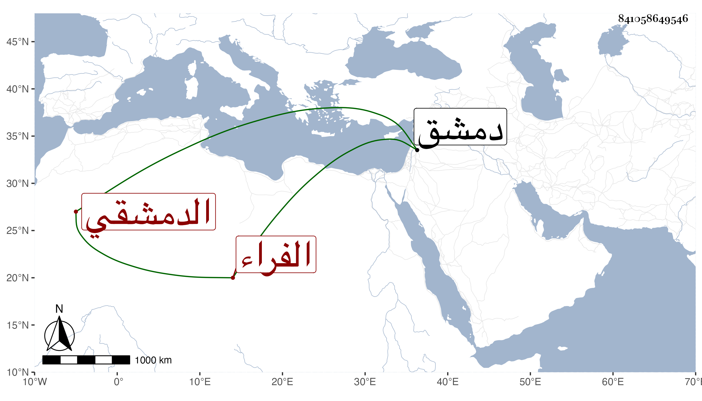

0902Sakhawi.DawLamic.ITO20230111-ara1.EIS1600.841058649546
Biography ID: 841058649546
775
عبد القادر بن محمد بن علي بن عمر بن نصر الله بن عبد الله الدمشقي الفراء سبط الحافظ الذهبي ويعرف بابن القمر وهو لقب جد أبيه عمر . ولد في رمضان سنة تسع وعشرين وسبعمائة وسمع الكثير على جده لأمه الحافظ وابن أبي التائب وأبي بكر بن محمد بن عنتر وأحمد بن علي الجزري وعبد الرحيم بن إبراهيم بن كاميار وزينب ابنة الكمال ومما سمعه عليها مشيخة ابن شاذان الصغرى وعواليها تخريج الذهبي ولقيه شيخنا فقرأ عليه بحانوته أشياء وكذا قرأ عليه الفاسي وسمع عبد الكافي بن الذهبي والعز عبد السلام القدسي وطائفة ، قال شيخنا كان خيرا محبا في الحديث وما أشك إن الحجار أجاز له لكن لم أقف على ذلك ، وهو في عقود المقريزي . مات في كائنة دمشق في رجب سنة ثلاث رحمه الله .
